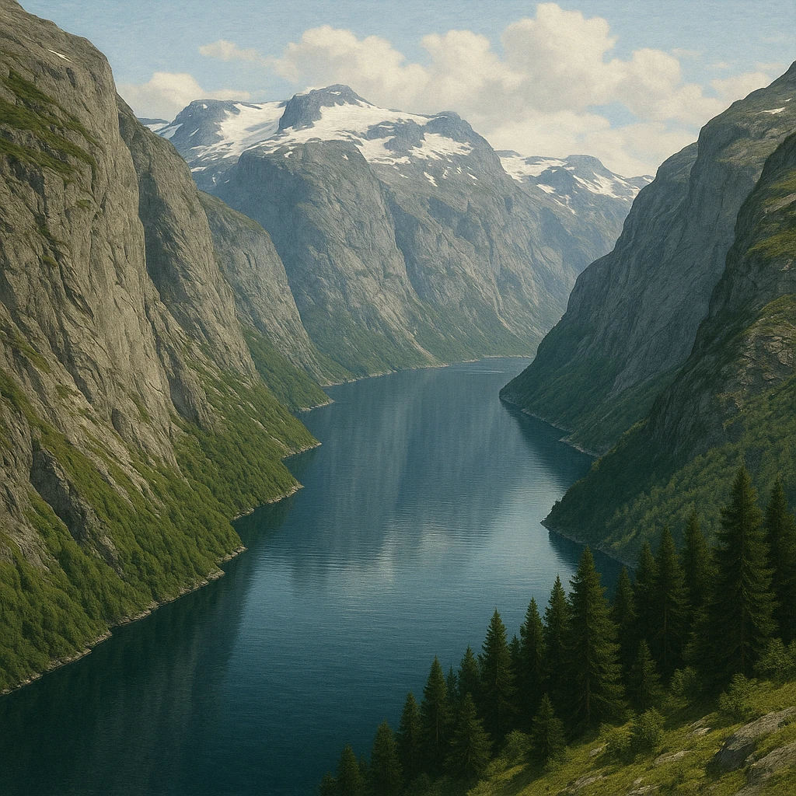
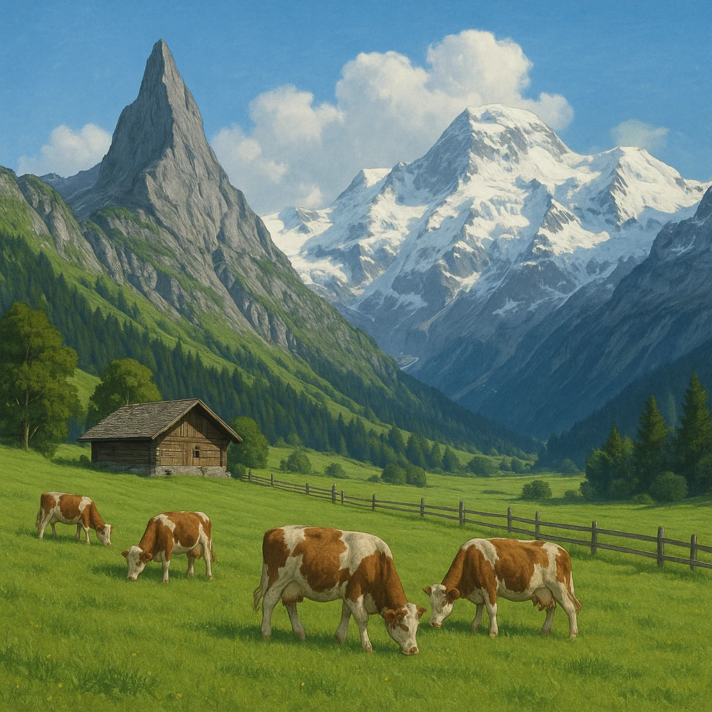

Ⅰ-2
地形カタログ
6つの地形を、特徴でおさえる
フィヨルド
氷河
がけずった谷に海水が入りこんだ、奥深い入り江。
ノルウェー
の海岸が有名。
アルプス山脈
4000m級
中央部を東西にはしる、高くて険しい山脈。氷河や観光地でも有名。
ピレネー山脈
3000m級
フランスとスペイン
の国境をつくる山脈。アルプスより少し低い。
ウラル山脈
ヨーロッパ州とアジア州を分ける
境目の山脈。低くなだらか。
ライン川
ドイツ・オランダを流れて
北海
に注ぐ国際河川。工業地帯を通る大動脈。
ドナウ川
いくつもの国を流れて
黒海
に注ぐ国際河川。ライン川と並ぶ二大河川。


国際河川とは
複数の国を流れ、どの国の船でも自由に通れる
川。ライン川・ドナウ川が代表。水質改善も国どうしが協力して行う。
第5章 ヨーロッパ州
SEED EDUCATION